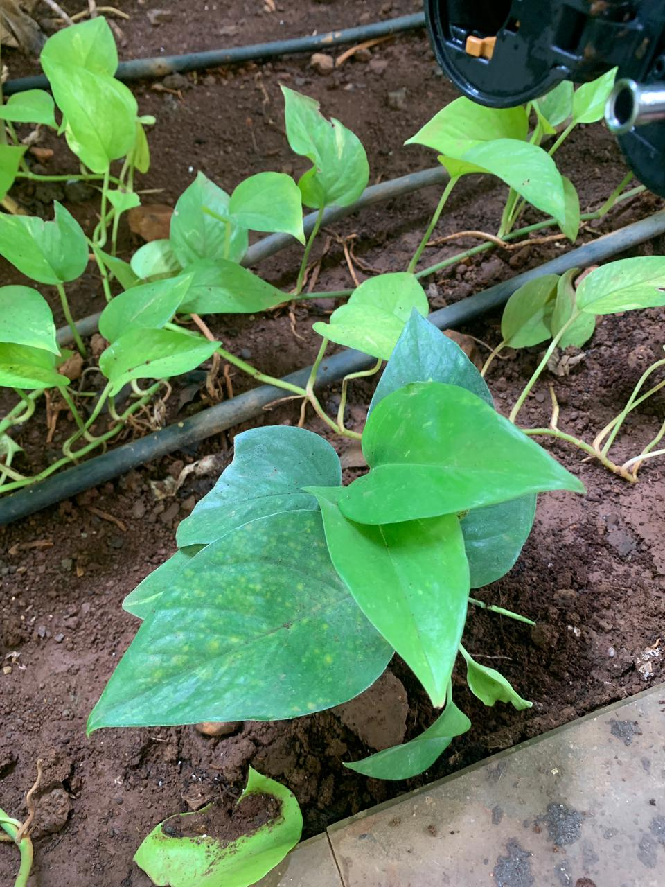
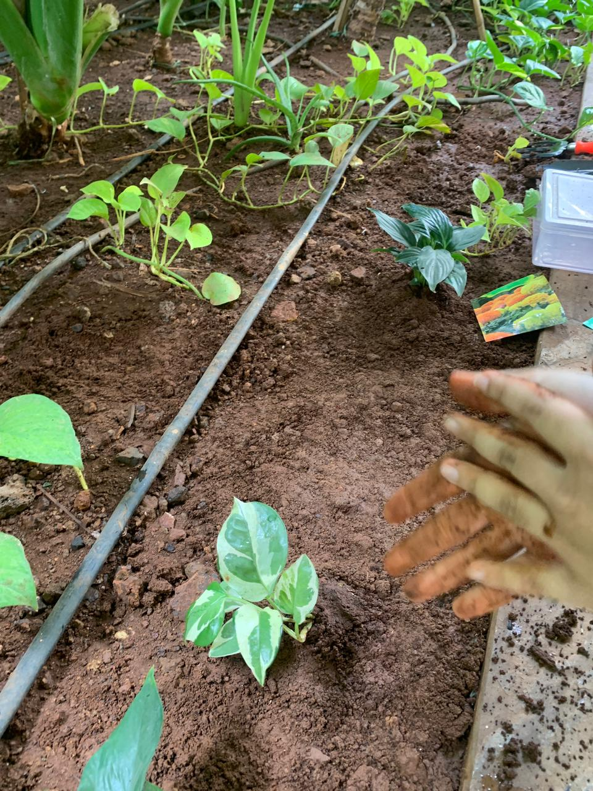
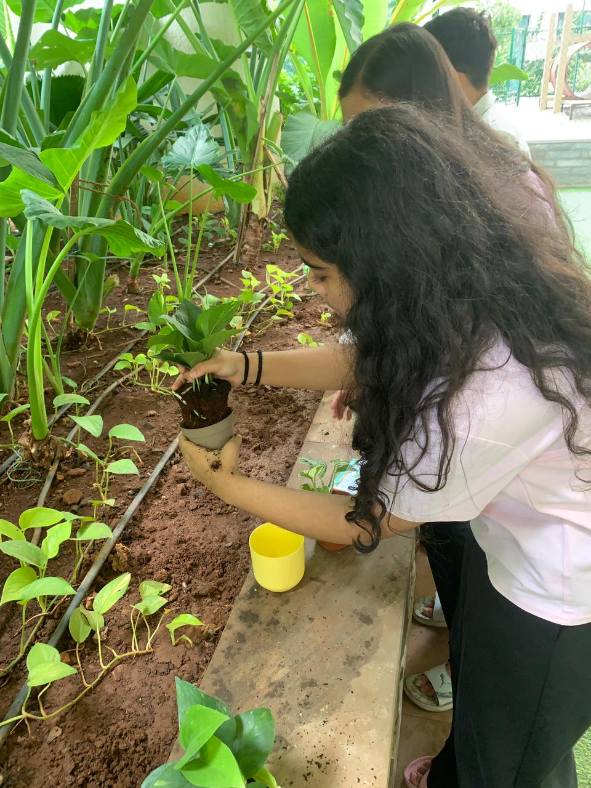
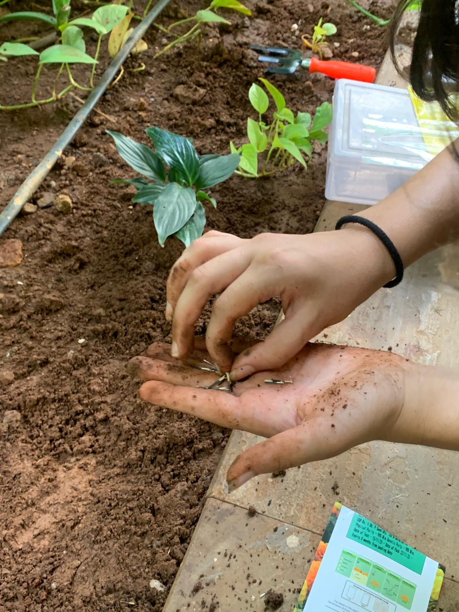
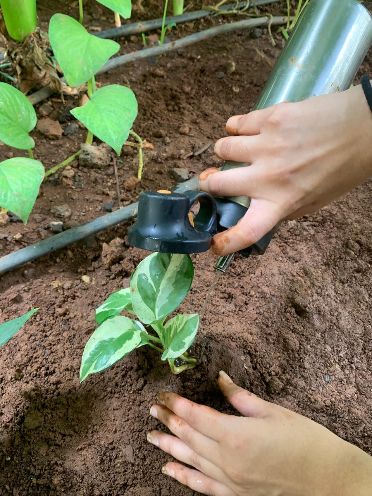
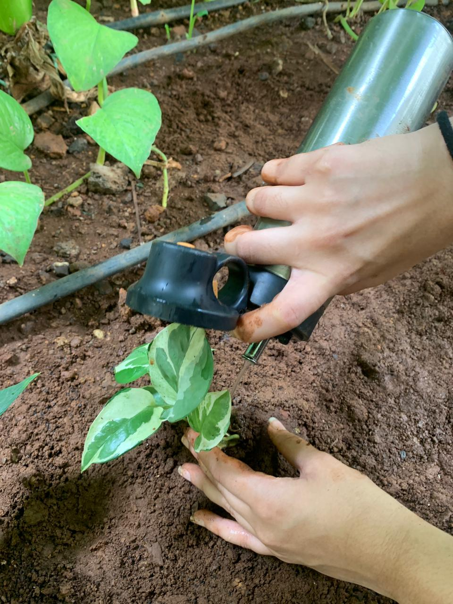
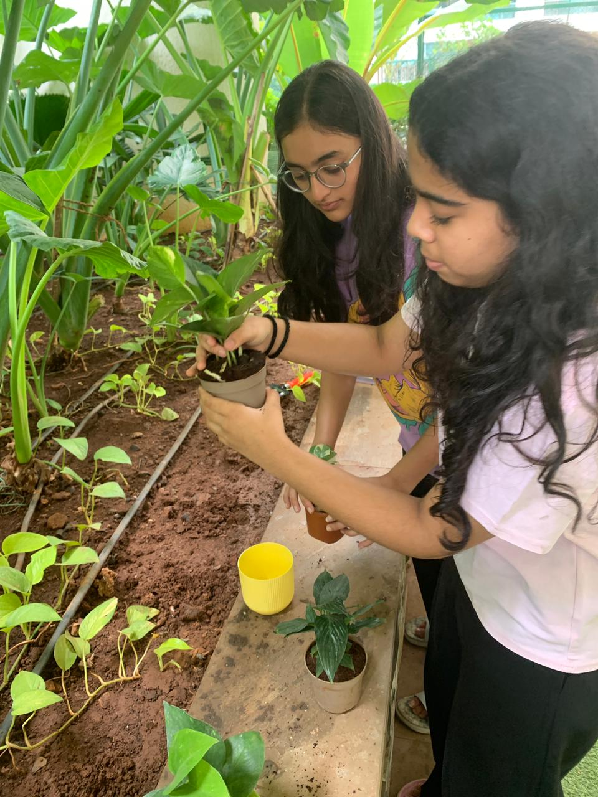
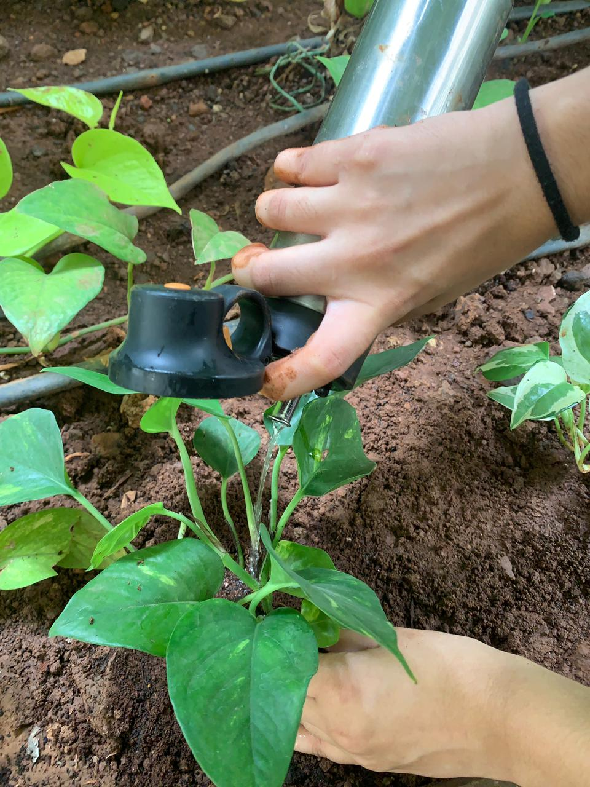

Does the decline of green spaces affect human well-being?
In cities like Mumbai, rapid urbanisation is destroying nature faster than we can protect it. We're on a mission to understand this crisis — and give communities the tools to fight back.
40%
of urban residents lack access to a green space within 300m of their home
21%
reduction in cortisol after just 20 minutes in a green space (WHO)
3.6B
people — nearly half the world — now live in cities with insufficient green coverage
↑29%
increase in mental health disorders in cities with less than 10% green cover
The Problem
Mumbai is losing its lungs
In cities like Mumbai, there has been a huge decline in green spaces due to urbanisation. People are permanently surrounded by crowds and pollution, with barely any access to nature.
"Green spaces are not a luxury — they are a fundamental component of healthy urban living. Their absence creates measurable harm to mental and physical health."
— World Health Organisation, Urban Green Spaces Report
Green spaces improve overall well-being, so their decline makes living unhealthy. This gives way to the urgent need of restoring green spaces in urbanised cities.
Why It Matters
The impact on us
🧠
Mental Health
Nature exposure reduces anxiety, depression and stress. Without it, urban residents show significantly higher rates of psychological disorders.
🫁
Physical Health
Green spaces filter air pollution, reduce heat islands, and encourage physical activity — all directly tied to cardiovascular and respiratory health.
🤝
Social Well-being
Parks are community connectors. Their absence fragments social bonds, increases loneliness, and weakens community resilience.
Our Approach
Three ways we're fighting back
🌱
EcoStride Mumbai
A city-wide challenge where we spread awareness and guide people to plant trees using organic pencils — then share their journeys with us.
🎓
Eco-Warriors Course
An online course connecting youth with experts to learn about green spaces and get certified as Eco-Warriors who create gardens at home.
🗺️
Green Map
A live worldwide map of parks, green spaces, nature reserves and ethical animal sanctuaries — so you always know where to go.
🌳 15 billion trees cut down every year🏙️ 68% of the world will be urban by 2050🧠 Green spaces lower cortisol by 21% in 20 minutes🌡️ Trees reduce city temps by up to 8°C🌿 One tree absorbs 22 kg of CO₂ per year💚 Indoor plants boost concentration by 15%🌍 3.6 billion people lack adequate green cover🌱 Children near green spaces have 34% lower anxiety risk🌳 15 billion trees cut down every year🏙️ 68% of the world will be urban by 2050🧠 Green spaces lower cortisol by 21% in 20 minutes🌡️ Trees reduce city temps by up to 8°C🌿 One tree absorbs 22 kg of CO₂ per year💚 Indoor plants boost concentration by 15%🌍 3.6 billion people lack adequate green cover🌱 Children near green spaces have 34% lower anxiety risk
Our Work in Action
Real hands. Real roots.
From plantation drives to garden workshops — this is what urban greening looks like in practice.

Team conducting a hands-on garden workshop

Planting a native sapling in urban soil

Nurturing a freshly planted pothos

Green pothos varieties ready to be planted

A new sapling finds its home in the ground
Every plant placed with purpose

Growing roots in the community

Plantation drive in action

Green spaces, one plant at a time
Did You Know?
More about green spaces
🌊
Oceans & Forests
Forests and oceans together regulate 90% of Earth's climate system. Losing urban green cover directly accelerates local warming and extreme weather events.
🦋
Biodiversity Collapse
Species are going extinct at 1,000× the natural rate due to habitat loss. Urban green corridors serve as vital lifelines for wildlife surviving in cities.
💧
Trees & Water
A single mature tree can absorb up to 450 litres of rainwater per day — dramatically reducing urban flooding and replenishing groundwater reserves.
Our Research
Evidence behind the crisis
We combine primary data collection with secondary research from global organisations to paint a comprehensive picture of how green spaces affect human well-being.
Primary Research
Surveys & Interviews
We conducted surveys and interviews with people across different environments — densely built urban areas, suburban zones, and areas with park access — to collect direct opinions on how their environment affects their mood, stress levels, and overall well-being.
KEY QUESTIONS ASKED
How often do you visit a park or green space per week?
How does your environment affect your daily mood?
Do you feel more stressed in areas without green spaces?
Would more green spaces in your area improve your well-being?
Primary Research
Observational Data
We collected observational data across three types of urban environments — parks and green spaces, regular city streets, and over-urbanised high-density zones — measuring visible indicators of well-being like crowd behaviour, pace of movement, spontaneous social interaction, and general demeanour.
OBSERVATION LOCATIONS
Shivaji Park, MumbaiDharavi streetsSanjay Gandhi Nat. ParkNariman Point
Secondary Research
Global Organisations
WHO — Urban Green Spaces & Health report: extensive evidence linking green space access to mental and physical health outcomes
UNEP — Cities and Biodiversity outlook: how urbanisation destroys urban ecosystems and what can be done
BBMP / BMC reports — Mumbai-specific data on green cover decline and urban heat island effects
Secondary Research
Academic Literature
We analysed peer-reviewed journals, research papers, books and articles to build a rigorous evidence base.
"Exposure to natural environments consistently produces restorative effects, reducing mental fatigue and restoring depleted attentional resources."
— Kaplan & Kaplan, Attention Restoration Theory (1989)
"A 10% increase in urban green cover can reduce the urban heat island effect by up to 1.5°C, with measurable health co-benefits."
— Nature Cities, 2023
Key Findings
What the research tells us
01
Green spaces directly reduce stress hormones
Studies consistently show a 20–21% reduction in cortisol after just 20–30 minutes in a park. Simply being present in nature counts.
Source: WHO Urban Green Spaces & Health, 2016; University of Michigan Study, 2019
02
Urban green cover in Mumbai has declined significantly
Areas like Dharavi, Kurla and Govandi have less than 3% green cover — far below the WHO recommendation of 9m² per person.
Source: BMC Green Development Report; UNEP City Biodiversity Index
03
Indoor plants provide a meaningful substitute effect
Even a single plant in a room improves concentration by up to 15% and reduces self-reported anxiety.
Source: Journal of Physiological Anthropology, 2015; NASA Clean Air Study
04
Communities with green spaces show stronger social cohesion
Research across 30+ cities found measurably higher rates of social interaction, community trust, and collective efficacy in green neighbourhoods.
Source: Kondo et al., 2018, Health & Place Journal
05
Youth in nature-deprived areas show higher anxiety rates
Children and teens in areas with less than 5% green cover are 34% more likely to develop anxiety disorders by adulthood.
Source: UNEP, Nature for Youth Report, 2022
Our Initiatives
Three ways to take action
We're not just researching the problem — we're actively building solutions.
1
Home Gardens
Spreading Awareness Locally & Globally
Home gardens provide a direct and immersive connection with nature, allowing individuals to interact with greenery in their daily lives. This hands-on experience actively reduces stress and promotes a sense of calm in urban environments.
Beyond emotional benefits, home gardens improve air quality, support immune function, and expose individuals to beneficial microorganisms. Psychologically, they encourage mindfulness, emotional stability, and a sense of purpose through nurturing life.
📦 Receive organic pencil kit🌍 Learn where to plant🌱 Plant & grow📸 Share your journey🏆 Track city-wide impact
2
Eco-Warriors Online Course
Educating the Youth of the Future
We conducted an interactive webinar to present the EcoStride initiative and share our research on the impact of green spaces on mental well-being. The session focused on explaining the connection between urbanisation, loss of greenery, and its psychological effects.
During the webinar, we walked participants through our key findings, highlighted the importance of home gardens, and demonstrated how small changes can improve mental health. The session also encouraged discussion, allowing participants to reflect on their own environments and consider practical steps they could take.
This initiative helped us spread awareness beyond our immediate circle and engage others in understanding and acting on the importance of green spaces.
📚 4-module free course👨🏫 Expert-led sessions🌿 Home garden project🎓 Eco-Warrior certification🌐 Share on community
3
EcoStride Platform
The Digital Hub for Urban Green Living
This website itself is the third initiative — an engaging digital platform that educates people about how a healthy environment positively contributes to well-being, while giving them practical tools to find and access green spaces wherever they are.
The centrepiece is our live Green Map, which pulls real-time data from OpenStreetMap to show every park, garden, nature reserve, botanical garden, and ethical animal sanctuary worldwide.
🗺️ Live worldwide map📊 Research hub🌍 Community stories🎯 Well-being education
The Bigger Picture
How the three work together
EcoStride gets people physically planting and moving. The Eco-Warriors course gives them the knowledge to do it well and keep going. The EcoStride platform connects everyone.
Together, the three initiatives create a complete cycle: awareness → education → action → community → more awareness. Each person who participates becomes an ambassador.
Filters
Search a city or load this area
Search or tap "Load this area" to discover green spaces around you
Finding green spaces...
Community
Stories of change
Real people, real plants, real change. Share your EcoStride journey, your home garden transformation, or your Eco-Warrior success.
Success Stories
What our community has grown
Share your journey
Planted something? Completed the course? Found a hidden green space? Tell us — your story might inspire someone who needs it.
Play & Learn
Games that grow your mind
Calm down, learn something new, or reimagine your city — three interactive experiences rooted in green-space science.
Calming
🌿
Breathe with Nature
A guided 4-2-6 breathing exercise inspired by how green spaces calm the nervous system. Reduce stress in just four rounds.
Educational
🌍
Eco Trivia Challenge
10 questions about green spaces, biodiversity and urban ecology. Can you score enough to become an Eco Champion?
Interactive
🏙️
Plant the City
Click city blocks to plant trees, shrubs and flowers. Watch the city health score rise. Can you reach 90% green cover?
Calming Experience
Breathe with Nature
This 4-2-6 breathing pattern activates the parasympathetic nervous system — the same calming pathway triggered by 20 minutes in a park. Follow along for four rounds.
🌿
Ready when you are
4
BREATHE IN
Round 1 of 4
🌿 Session Complete
You've completed 4 breathing rounds. Rhythmic breathing like this measurably reduces cortisol, improves focus, and activates the same calming pathways as time in nature. Try making it a daily habit.
Educational Challenge
Eco Trivia Challenge
10 questions about green spaces, ecology and urban health. You have 25 seconds per question. How well do you know your planet?
Question 1 of 10Score: 0
25
Interactive Builder
Plant the City
Your city needs green. Click each block to cycle through tree, shrub, flower, or empty. Fill the city with nature and watch the health score climb!
City Health0%
Score: 0
🏢 Empty (0 pts)
🌳 Tree (3 pts)
🌿 Shrub (2 pts)
🌸 Flower (1 pt)
Click any block to plant. Click again to cycle to the next type.
Get Involved
Turn awareness into action
Join EcoStride, adopt a plant, submit a hidden green space, and track the small actions that slowly drag cities back toward sanity.
Green Map Contribution
Submit a Green Spot
Know a quiet park, a garden corner, or a patch of green? Add it to our map so someone nearby can find calm.